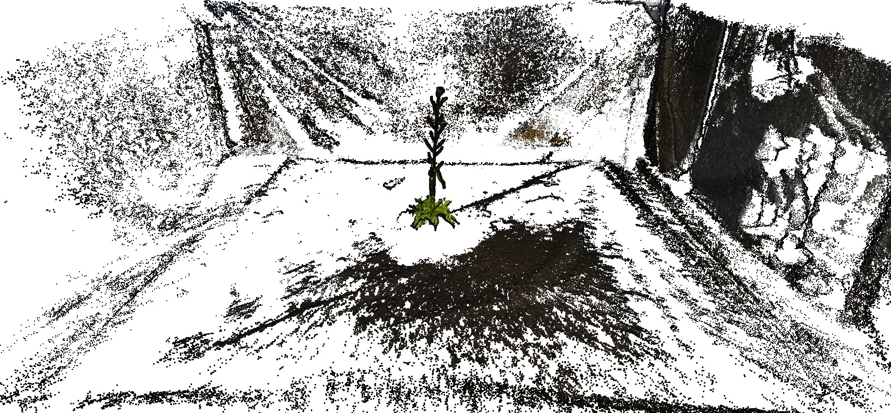

Plant PhenotypingLink
Within the ROMI project, some work packages are oriented towards the development of a 3D plant phenotyping platform adapted to single potted plants. To achieve this goal, the team developed a suite of affordable open-source tools (hardware & software) presented hereafter.

We aim at making our software architecture modular to ensure the required flexibility and adaptability to most of the robotic & research applications from the ROMI project when possible.
The flowchart belows indicate how the various modules and parts of the ROMI software interact:
List of Python modulesLink
Hereafter we list the Python module used in the Plant Imager project:
plant-imager to control the Plant Imager hardware, generates virtual plants and image them with the Virtual Plant Imager.
plantdb the database to host and serve images and processed data.
plant-3d-explorer to visualize the images and processed data.
plant-3d-vision to reconstruct the RGB images into 3D models and to quantify phylotaxis from 3D models
romiseg for semantic labelling of plants.
romicgal wrapper around CGAL for triangulation and skeletonization.
romitask defines the tasks and the command-line-interface (CLI) romi_run_task.
dtw to align sequences, notably angles and internodes obtained from phylotaxis measurements.
UsageLink
We provide tutorials explaining the usage of out various tools and how-to detailing the algorithms at work for each task.